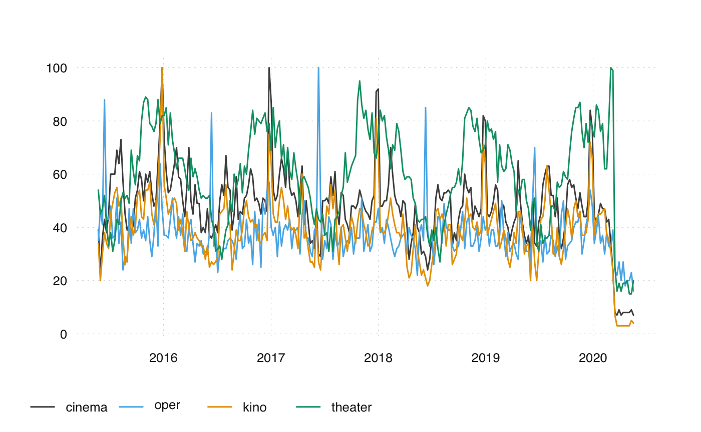
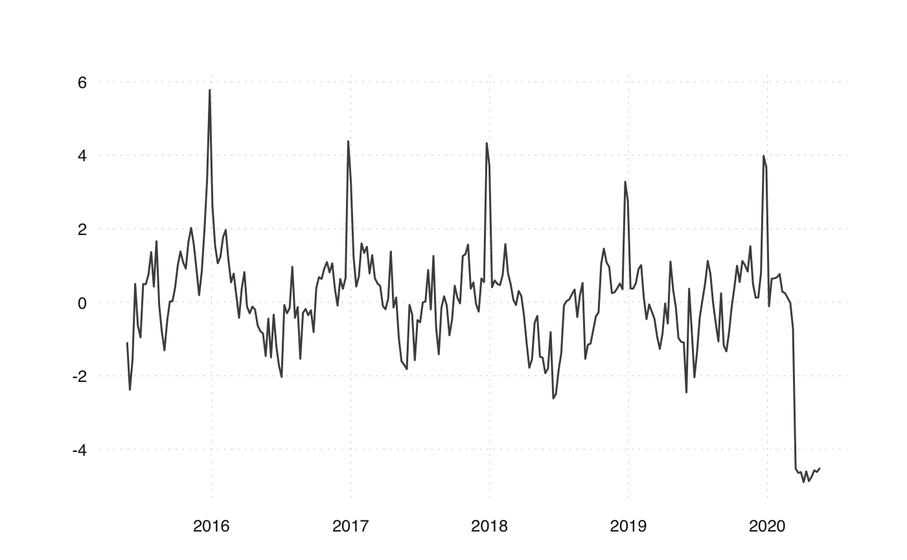
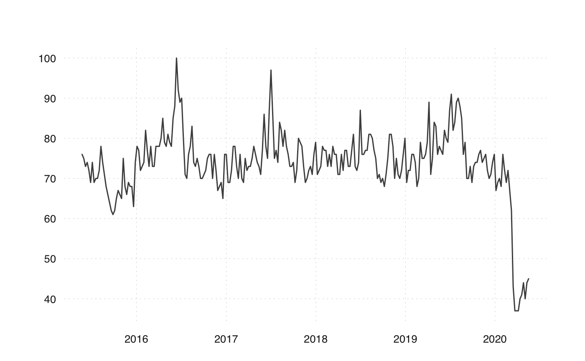

Google Trends is an online search tool from Google that allows you to analyse the relative popularity of search queries: https://trends.google.com/. The popularity of a search term can be analysed over time, across regions and relative to other search terms.
The R package trendecon allows to produce long daily time series of search queries. The main function ts_gtrends() downloads Google Trends data for one or multiple keywords or Google product categories. It wraps around the package gtrendsR but modifies the function [gtrendsR::gtrends()] by a) vectorizing it, b) converting the result to a tsboxable tibble and c) retrying if no result is returned.
Suppose we are interested in the demand for cultural events in Switzerland. Think of what people would google if they want to go to a cultural event. For instance, they might google “cinema”, “oper”, “kino” and “theater”. The following command downloads the Google Trends data for these search terms.
library(trendecon) gt_data <- ts_gtrends( keyword = c("cinema", "oper", "kino", "theater"), geo = "CH", time = "today+5-y" ) #> Downloading data for today+5-y #> Downloading data for today+5-y #> Downloading data for today+5-y #> Downloading data for today+5-y
The paramter geo specifies the geographic location. Default is Switzerland (“CH”). With geo="" the global search volume is used. Not only countries but also regions within a country are possible. See data("countries") from the gtrendsR package for a list of available regions and their code.
The parameter time specifies the time span of the query. “today+5-y” downloads for the last five years (default). For more details on the syntax, see the R Documentation of the function ‘gtrends()’ in the ‘gtrendsR’ package. The frequency of the data depends on the entered time span. A time span of up to nine months will yield daily data. Up to five years allows for a weekly frequency. And for a time span of more than five years, the data is monthly. time = "all" uses the maximum time span which starts in January 2004.
You can plot the time series with ts_plot from the tsbox package.

To retrieve the common signal of the four time series, you can for instance draw the first principal component.

Alternatively to a specific search term, also predefined Goolge product categories can be retrieved. Every search query in the Google search engine is assigned to one or multiple Google product categories. The search volume of a category is thus an aggregate of multiple search terms. See https://github.com/pat310/google-trends-api/wiki/Google-Trends-Categories for a hierarchically structered list of these categories or get them with data("categories") from the gtrendsR package. For instance, the category “Events & Listings” with id 569 can be retrieved as follows.
gt_data_cat <- ts_gtrends( category = "569", geo = "CH", time = "today+5-y" ) #> Downloading data for today+5-y ts_plot(gt_data_cat)
